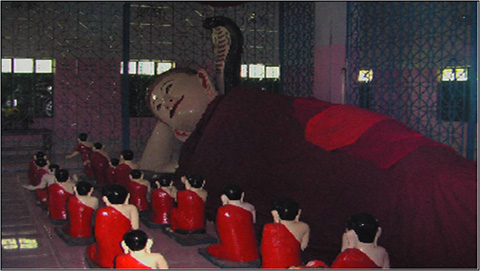

বৈচিত্র্যময় খাগড়াছড়ি
খাগড়াছড়ি জেলা সদরের প্রাণকেন্দ্রে অবস্থিত এই বৌদ্ধ মন্দিরটি জেলার সবচেয়ে পুরাতন মন্দির। ধারণা করা হয় এর বয়সকাল প্রায় শত বছর। এখানে বুদ্ধের একটি শায়িত মূর্তি রয়েছে যার বয়সও প্রায় শত বছর।
বৌদ্ধ ধর্মাবলম্বিদের মাঝে এটি অতি পবিত্র স্থান। ১৮৯৭ খ্রিস্টাব্দে স্থানীয় প্রভাবশালী ব্যক্তিত্ব রেম্রাচাই রায় বাহাদুর এ মন্দিরটি নির্মাণ করেন। তিনি খাগড়াছড়ি বাজারেরও প্রতিষ্ঠাতা।

য়ংঢ বৌদ্ধ বিহারের অভ্যন্তরে গৌতম বুদ্ধের শায়িত মূর্তি
প্রতি বছর বিভিন্ন পূজা পার্বণে, পূর্ণিমা তিথিতে এ মন্দির হয়ে ওঠে হাজারো মানুষের মিলনমেলা। ফানুসের লাল আলোতে আকাশে যখন আলোর তীব্র রোশনায় ছড়িয়ে পড়ে তখন আনন্দে বিমোহিত হয় সবার মন।